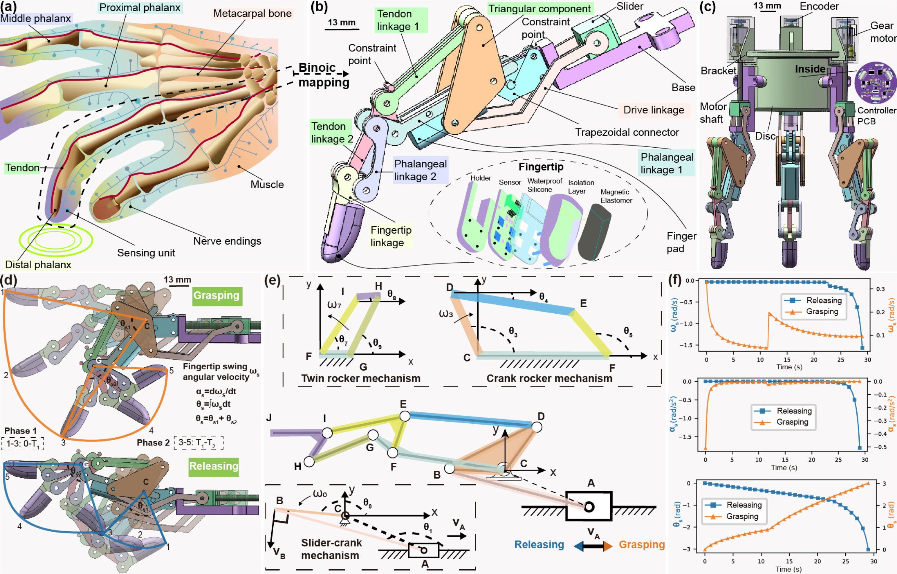
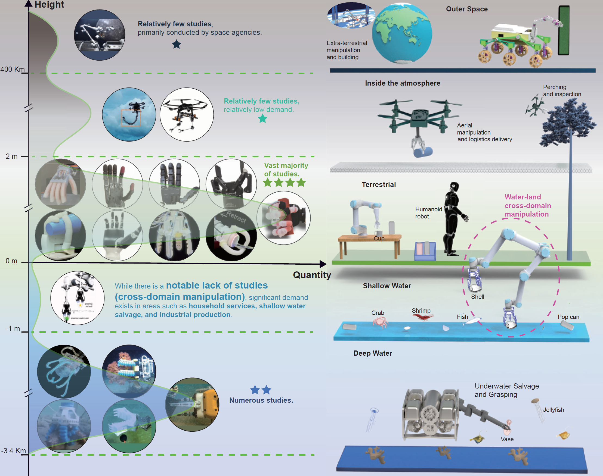
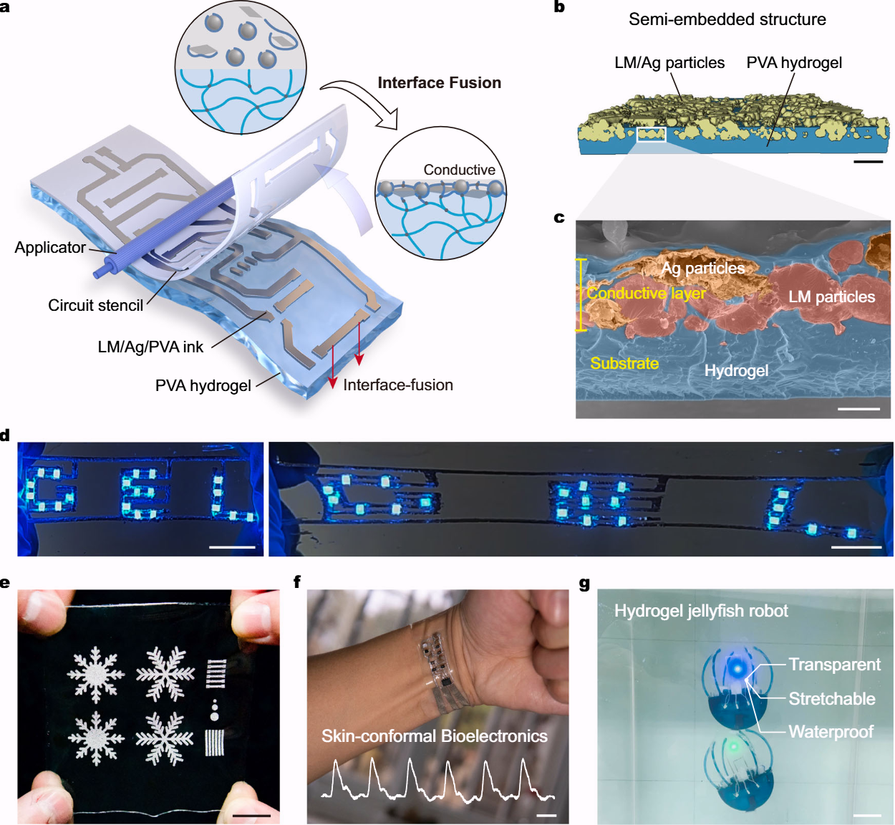
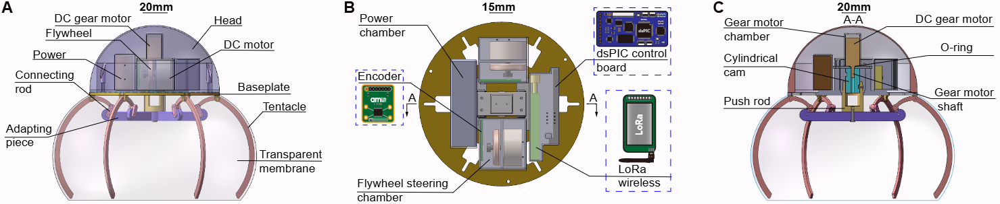
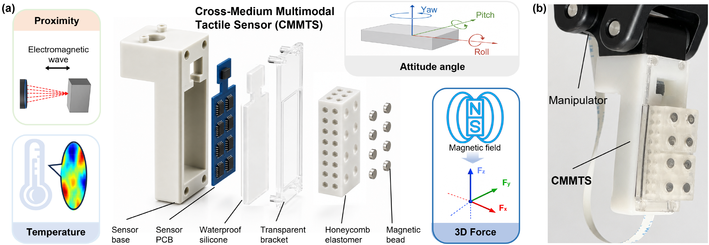

I'm a PhD student in Intelligent Science and Technology at Tongji University. My longstanding interest lies in the cross-medium robotic manipulator, tactile sensing, and robot Learning. My research focuses on enabling robots to perceive physical interactions and perform robust manipulation in complex and changing environments. I'm fortunate to be advised by Tenured Associate Professor Yanmin Zhou and Professor Bin He.
Design, analysis, and control of cross-domain robotic manipulator.
Magnetic tactile sensors, 3D force sensing, and multimodal tactile sensors.
Multimodal learning, visual-tactile fusion, and edge intelligence.
Mechanism design, Multimodal motion control, Perception and interaction, Manipulation.





Co-PI | June 2025 - June 2026. Shanghai Intelligent Science and Technology Category IV Peak Discipline, Interdisciplinary Innovation Education-Research Integration Project for Ph.D. students.
Core member; primary proposal writer; M.Sc. project | Apr 2024 - Mar 2026. Guangzhou Basic and Applied Basic Research Program.
Participant. National Key R&D Program of China, Intelligent Robotics subproject.
Email: weiwang98@tongji.edu.cn
Affiliation:
Tongji University, Shanghai Autonomous Intelligent Unmanned Systems Science Center
Zhangjiang, Pudong, Shanghai, China
Google Scholar: Google Scholar Profile
GitHub: GitHub Profile
ORCID: ORCID